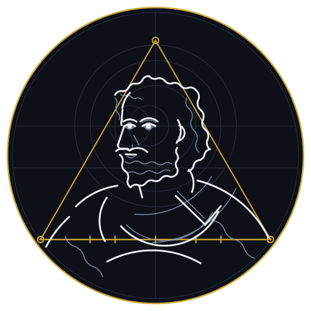

Aristotle of Stagira¶

Aristotle of Stagira (384–322 BCE) gave geometry its classical philosophy of science—explaining how demonstrative proof (apodeixis) rests on indemonstrable first principles (nous), how the mind abstracts mathematical form without falsity, and how geometric truth is discovered by putting constructions into actuality. This synchronized four-track archive brings together fifty-four foundational chapters across five works, pairing Immanuel Bekker’s 1831 Prussian Academy Greek with the classic Oxford English translations, structural summaries, and cross-corpus notes.
Books in This Collection¶
Primary Edition · 2 Books · 17 Chapters · 4 Tracks
Posterior Analytics — Aristotle’s foundational treatise on demonstrative science (epistēmē): the distinction between hypotheses, postulates, and common Euclidean axioms, why geometry proves universal properties by necessity, and how intuitive intellect (nous) grasps first principles.
Primary Edition · 6 Books · 10 Chapters · 4 Tracks
Metaphysics — The ontological charter of mathematics: continuous quantity, mathematical intermediates, intelligible matter (hylē noētē), the discovery of geometric theorems by actualizing constructions (Theta 9), and why the mathematical sciences display order, symmetry, and beauty.
Organon (7 Chapters)
Discrete versus continuous quantity in Categories, syllogistic reduction of the incommensurable diagonal in Prior Analytics, and definition and antanairesis in Topics.
Physics & On the Heavens (14 Chapters)
Abstraction without falsehood (Book II, Ch. 2), the potential infinite, place (topos), the indivisibility of the continuum, Zeno’s paradoxes, and three-dimensional body.
On the Soul (6 Chapters)
Imagination (phantasia), geometric figures carried in phantasms, active and receptive intellect, and how the mind thinks mathematical indivisibles in De Anima Book III.
Key Features¶
Synchronized Bekker Greek & Oxford English
Every chapter pairs verbatim 1831 Prussian Academy Greek (Immanuel Bekker) with the Oxford Clarendon Press translations of Ross, Mure, Hardie, Gaye, Smith, Stocks, Edghill, Jenkinson, and Pickard-Cambridge.
199 Cross-Corpus Bekker Loci
The Bekker Concordance reconciles 246 textual citations across Euclid’s Elements, Hoenen’s De Noetica Geometriae, and Pacioli’s De Divina Proportione.
Noetic & Geometric Lexicon
Thirty-six curated entries in the Glossary trace Aristotelian terminology—from apodeixis and epistēmē to phantasma and hylē noētē—directly to their chapters.
Reference & Project¶
Scholarly Apparatus
Bekker Concordance — 199 Bekker loci and 246 cross-corpus citations across GEOMETOR
Glossary — 36-term Greek, Scholastic Latin, and geometric lexicon
People & Bibliography — Biographical profiles and authoritative Oxford/Bekker editions
About This Project
About — Scope, editorial architecture, and noetic geometry mission
Using This Edition — Track switching, Bekker citations, and navigation guide
Log & Modules — Development notes and Python concordance tools